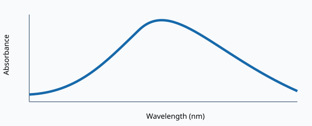

Reference spectrum

Values are generated examples, not experimental measurements.
Processing summary
Input domain
400–700 nm
Baseline
First three samples
Output
Corrected absorbance
Notes
The layout intentionally contains opaque names, excessive wrappers, and an unlabeled refresh control.
Evaluation edits should preserve the text and spectrum description.